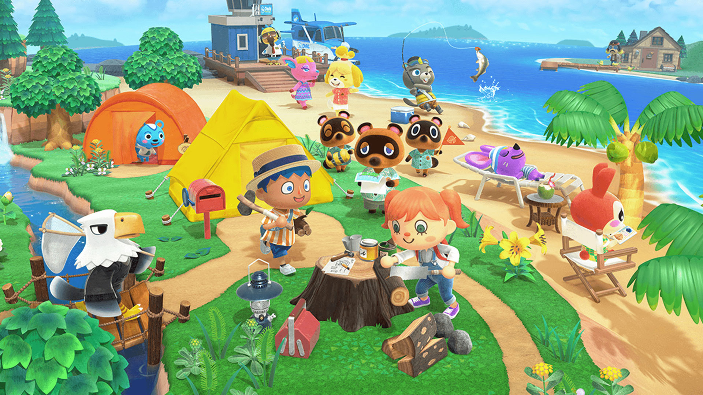

Home
What is Animal Crossing?
Animal Crossing is a social simulation video game series developed and published by Nintendo. In Animal Crossing, the player character is a human who lives in a village inhabited by various anthropomorphic animals and can do various activities like fishing, bug catching, and fossil hunting!

What is being ranked into tiers?
In Animal Crossing, there are up to 10 villagers who will stay in your island/village/town/city/etc at one period of time. There are also weekly visitors who will only visit your place and provide some type of services or trigger certain events. This website is going to rank the top 10 villagers and the top 5 visitors!